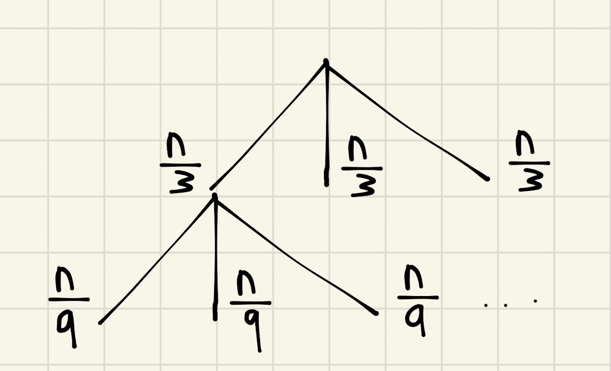

Backlinks
Table of Contents
1 Asymptotically Analyze
1.1 1.a
Therefore:
- \(g = o(f)\)
- \(g = O(f)\)
1.2 1.b
Therefore:
- \(f = O(g)\)
- \(g = O(f)\)
- \(f = \theta(g)\)
1.3 1.c
Therefore:
- \(g = o(f)\)
- \(g = O(f)\)
1.4 1.d
Therefore:
- \(f = o(g)\)
- \(f = O(g)\)
1.5 1.e
Therefore:
- \(g = o(f)\)
- \(g = O(f)\)
1.6 1.f
For this expression, we need to apply l'hospital's rule repeatedly as both the top and bottom evaluates to \(\infty\) until the final \(n\):
\begin{equation} \lim_{n \to \infty} \frac{n^8}{1.1^n} = \cdots = C\lim_{n \to \infty} \frac{1}{1.1^n} = 0 \end{equation}where \(C\) is some constant generated by the power rule.
\begin{equation} \lim_{n \to \infty} \frac{1.1^n}{n^8} = \cdots = C\lim_{n \to \infty} 1.1^n = \infty \end{equation}Therefore:
- \(f = o(g)\)
- \(f = O(g)\)
2 Vampires
The open-form recurrence relationship for vampires is as follows:
- \(T(1) = 2\)
- \(T(n) = 2T(n-1)+1\)
We will first generate a table relating \(n,T\):
| n | T(n) | Guess |
|---|---|---|
| 1 | 2 | 2 |
| 2 | 5 | 5 |
| 3 | 11 | 11 |
| 4 | 23 | 23 |
| 5 | 47 | 47 |
| 6 | 95 | 95 |
| 7 | 191 | 191 |
| 8 | 383 | 383 |
| 9 | 767 | 767 |
| 10 | 1535 | 1535 |
The guessed formula is as follows:
\begin{equation} f(n) = 2^n+2^{n-1}-1 \end{equation}We will now proof this via induction. We will set our inductive hypothesis as, at some \(P(n)\) for some \(n\), \(P(n) = 2^n+2^{n-1}-1 = T(n)\). At our base case \(P(1)=2^1+2^0-1 = 2 ==2\).
Induction:
- \(T(n+1)=2T(n)+1\), given
- \(T(n+1) = 2(2^n+2^{n-1}-1) +1\), replacing the inductive hypothesis
- \(T(n+1) = 2^{n+1} + 2^{n} - 2 +1\), simplify
- \(T(n+1) = 2^{n+1} + 2^{n} - 1\), simplify
- \(T(n+1) = 2^{(n+1)} + 2^{(n+1)-1} - 1\), simplify
Since \(P(n)\) implies \(P(n+1)\), and we have proven the base case, by induction this statement is true.
3 TriSort
3.1 Three Sorted Lists
To sort two lists, the fastest method is to sort the first two list, then sort the third.
- \((\frac{2}{3}n-1) + (n-1)\)
- \(\frac{5}{3}n -2\)
Therefore, for a three sorted list, each with \(\frac{n}{3}\) elements, the worst case runtime would be \(\frac{5}{3}n -2\) to merge the lists together—the worst-case case is to place a pointer on each element to do incremental element comparison.
3.2 Recurrence Running Time
- \(T(1) = 1\)
- \(T(n) = 3T(\frac{n}{3}) + (\frac{5}{3}n-2)\)
Furthermore:
\begin{equation} \lim_{n\to \infty} \frac{n}{\frac{5}{3}n-2} = \frac{1}{2} < \infty \end{equation}Therefore: \(\frac{5}{3}n-2 = \theta(n)\). The resulting expression, therefore is that:
\begin{equation} T(n) = 3T\left(\frac{n}{3} \right) + \theta(n) \end{equation}3.3 Drawing a Recurrence Tree

3.4 Number of Comparisons at Each Layer
At each layer, there is \(a\frac{n}{a}\) comparisons (\(3\) nodes of \(\frac{n}{3}\) on the first, \(9\) nodes of \(\frac{n}{9}\), etc.). Therefore, each layer of the tree has \(\theta(n)\) comparisons.
3.5 Height of the Tree
WLOG at large values of \(n\), we will assume that the number of elements in the list are a power of \(3\) to make a balanced tree. To divide \(n\) by \(3\) recursively until we result at \(1\) (the actual base cases), there will need to be \(\log_3(n)\) layers in the tree.
3.6 Master Method
The general recurrence relation for this process is as follows:
\begin{equation} T(n) = 3T\left(\frac{n}{3} \right) + \theta(n) \end{equation}We can see that \(a=3, b=3, d=1\), and the base case is \(c=1\). \(b^d = 3\), which is equal to \(a\).
Therefore, by the Master Method, we can say that the runtime for the algorithm is \(\theta(nlog(n))\).
3.7 Did the student win?
No. The \(\theta\) time complexity between Merge and TriMerge is exactly the same, and the constant factor of TriMerge \(\frac{5}{3}n-2\) is roughly \(\frac{2}{3}n\) larger than the \(n-1\)